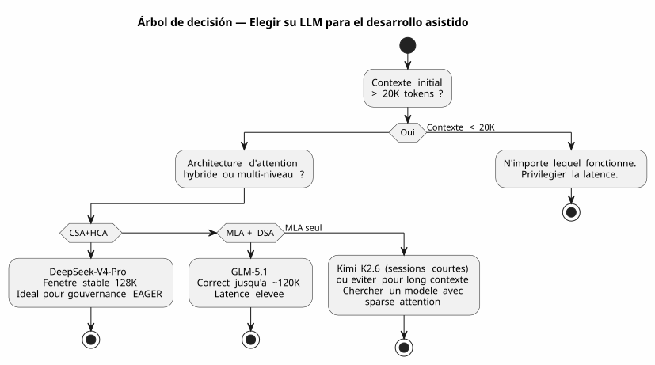

DeepSeek-V4-Pro, Kimi K2.6, GLM-5.1 : Tres LLMs a prueba del Vibe Coding de Contexto Largo
Publié le 28 April 2026
- Contexto: no es un banco de pruebas, es una obra
- Mi entorno de prueba
- La rúbrica de evaluación
- Round 1 : Kimi K2.6 — La Falsa Salida
- Ronda 2 : GLM-5.1 — El Combatiente Honorable
- Ronda 3 : DeepSeek-V4-Pro — La Máquina de Guerra
- El cara a cara : métricas comparativas
- ¿Por qué DeepSeek-V4-Pro gana en desarrollo de software?
- Lecciones Aprendidas: Cómo Elegir su LLM para el Vibe Coding
- ¿Y la Gouvernance Agent en todo eso?
- Fuentes técnicas
- Conclusión : La Elección del Artesano
La guerra de los LLMs también se libra en el terminal de un desarrollador. No en los benchmarks académicos estériles. En la vida real: un prompt de 30 000 tokens, una gobernanza de agente en AsciiDoc, plugins de Gradle Kotlin DSL por depurar y sesiones que se encadenan durante tres semanas. He probado para ti DeepSeek‑V4‑Pro, Kimi K2.6 y GLM‑5.1. Aquí tienes el veredicto, con pruebas técnicas a su disposición.
- toc
-
[]
Contexto: no es un banco de pruebas, es una obra
Hace tres semanas, estaba trabajando en`codebase-gradle`, mi sistema meta-build que centraliza la configuración YAML de cuatro proyectos: un generador de README PlantUML, un constructor de diapositivas AsciiDoc, un sitio estático JBake y un chatbot LLM. El agente Opencode, gobernado por mi metodología de archivos de agentes en AsciiDoc, cargaba ~30K tokens de contexto EAGER al inicio de cada sesión — reglas absolutas, backlog, historial de las 10 sesiones anteriores.
Es en este terreno donde me enfrenté a tres modelos :
-
Kimi K2.6(Moonshot AI, 1T params / 32B activados, 256K contexto máximo, MLA) - GLM-5.1(Zhipu AI/Tsinghua, 744B parámetros / DSA, 200K contexto máximo) - DeepSeek-V4-Pro(DeepSeek, 1.6T params / 49B activados, 1M contexto máximo, CSA+HCA)
Todos servidos vía Ollama en servidor en la nube, todos en modo thinking (fase de reflexión activada). El reto: producir código correcto, mantener la coherencia en sesiones largas y no alucinar cuando el contexto supera los 80K tokens.
Mi entorno de prueba
Failed to generate image: PlantUML preprocessing failed: [From <input> (line 12) ]
@startuml
skinparam backgroundColor #FEFEFE
skinparam defaultTextAlignment center
skinparam wrapWidth 220
title Entorno de Prueba — Sesiones Opencode × 3 LLMs
left to right direction
package "🖥️ Terminal de Desarrollador" #E8F5E9 {
rectangle "AGENT.adoc\n(reglas, backlog)" as AG
rectangle "PROMPT_REPRISE\n(misión)" as PR
rectangle "INDEX.adoc
^^^^^
Syntax Error? (Assumed diagram type: component)
@startuml
skinparam backgroundColor #FEFEFE
skinparam defaultTextAlignment center
skinparam wrapWidth 220
title Entorno de Prueba — Sesiones Opencode × 3 LLMs
left to right direction
package "🖥️ Terminal de Desarrollador" #E8F5E9 {
rectangle "AGENT.adoc\n(reglas, backlog)" as AG
rectangle "PROMPT_REPRISE\n(misión)" as PR
rectangle "INDEX.adoc
(hoja de ruta)" as IDX
}
package "☁️ Ollama Cloud" #BBDEFB {
rectangle "DeepSeek-V4-Pro
1.6T / CSA+HCA" as DV4
rectangle "Kimi K2.6
1T / MLA" as KIMI
rectangle "GLM-5.1\n744B / MLA+DSA" as GLMG
}
package "⚙️ Codebase Gradle" #FFF9C4 {
folder "buildSrc/" {
file "codebase.kt"
file "readme.kt"
file "site.kt"
file "slider.kt"
file "snapshot.kt"
}
file "build.gradle.kts
(947 líneas)"
file "embeds.yml"
}
AG --> DV4 : Sessions 1-8 ✅
AG --> KIMI : Sessions 9-10 ⚠️
AG --> GLMG : Sessions 11-13 ⚠️
DV4 --> "Base de código" : "TDD, refactorización,\nsnapshot"
KIMI --> "Base de código" : "Degradación\n desde 60K tokens"
note bottom of GLMG
Meilleur que Kimi
mais latence +
DSA moins robuste
que CSA+HCA
end note
@enduml
Cada sesión comenzaba con aproximadamente 30K tokens de contexto EAGER :`AGENT.adoc`(287 líneas)PROMPT_REPRISE.adoc(51 líneas),.agents/INDEX.adoc(218 líneas),LAZY_EAGER_ESSENTIALS.adoc(50 líneas). El contexto crecía rápidamente con los intercambios — una sesión típica de 10 mensajes añadía 15-20K tokens al prompt acumulado.
La rúbrica de evaluación
He evaluado cada modelo en cuatro ejes críticos para el desarrollo de software asistido :
eje |
Criterio concreto |
Coherencia de contexto largo |
¿Recuerda el agente los acuerdos decididos hace 40 mensajes? |
Calidad del código producido |
¿El código compila a la primera? ¿Respeta los patrones existentes? |
Razonamiento arquitectónico |
¿Entiende el agente las relaciones entre los módulos sin que yo se los vuelva a explicar? |
Resistencia a las alucinaciones |
¿A partir de cuántos tokens el agente comienza a inventar APIs o clases inexistentes? |
Y una métrica sintética casera : elcoeficiente de recuperación(cuánto tiempo paso corrigiendo al agente en lugar de programar con él)
Round 1 : Kimi K2.6 — La Falsa Salida
Kimi K2.6 ha sido mi primera elección. Sus benchmarks en SWE-Bench Verified (80.2) y Terminal-Bench 2.0 (66.7) son excelentes. Su arquitectura MLA promete una buena eficiencia en secuencias largas.
Session 9 : la mejora
Primera sesión con Kimi. Tarea: implementar el método`resolveActiveKey()dentro`codebase.kt— una función de resolución de clave API con fallback CLI. El contexto es de 30K tokens, Kimi razona rápido, produce un código limpio con gestión de expiración de claves.
fun resolveActiveKey(
cfg: CodebaseConfiguration,
logger: Logger,
cliProvider: String? = null,
cliAccount: String? = null,
cliKey: String? = null
): NamedApiKey? {
// Résolution provider → compte → clé avec CLI override
// Kimi a parfaitement compris la chaîne de priorité
}El código compila. Los 7 casos de prueba pasan. Soy optimista.
Sesión 10: el naufragio silencioso
Segunda sesión. El contexto se incrementa a ~90K tokens con los intercambios. Pido a Kimi que agregue un mecanismo de captura instantánea AsciiDoc que anonimice los secretos antes de la escritura.
Es aquí donde se desvía. Kimi empieza a inventar clases que no existen. Me propone`AnonymizedObjectMapper`— una clase ficticia. Él confunde`ReadmeYmlAnonymizer` et CodebaseYmlAnonymizer. Él me sugiere importar`com.fasterxml.jackson.anonymize.*`— un paquete que nunca ha existido
Peor: en su fase de reflexión, veo que construye razonamientos basados en premisas falsas. Él "se recuerda" que`GitConfig`a un campo`anonymizedToken`— no, es`resolvedToken(). Él atribuye a`SiteYmlAnonymizer`un método`maskSupabaseCredentials()— que no existe.
_ No era un error. Era una disolución progresiva de la coherencia. Como si cada token añadido al contexto diluyera un poco más la memoria de los primeros 30 000. _
Detengo a Kimi después de dos sesiones. El diagnóstico es claro: el MLA comprime bien el caché KV, pero sin un mecanismo de selección sparsa de grano fino, la atención se diluye mecánicamente más allá de 60K tokens. Cada token 've' cada vez peor el contexto distante — y comienza a rellenar los huecos con ruido.
Ronda 2 : GLM-5.1 — El Combatiente Honorable
GLM-5.1 llega con una arquitectura diferente: MLA para el modelo base, luego un continued pre-training con DSA (DeepSeek Sparse Attention) — un indexador ligero que selecciona dinámicamente los top-2048 tokens relevantes de todo el historial.
Arquitectura: el DSA contra el MLA puro
La diferencia es fundamental. Donde Kimi comprime el historial en un único espacio latente (y pierde gradualmente la capacidad de discriminar la información pertinente), GLM añade un indexador post-entrenamiento que realiza una selección esparsa explícita.
Failed to generate image: PlantUML preprocessing failed: [From <input> (line 9) ]
@startuml
skinparam backgroundColor #FEFEFE
skinparam defaultTextAlignment center
title Arquitecturas de Atención — MLA vs MLA+DSA
left to right direction
rectangle "Kimi K2.6 — MLA puro" as MLA #FFCDD2 {
rectangle "KV Cache
^^^^^
Syntax Error? (Assumed diagram type: class)
@startuml
skinparam backgroundColor #FEFEFE
skinparam defaultTextAlignment center
title Arquitecturas de Atención — MLA vs MLA+DSA
left to right direction
rectangle "Kimi K2.6 — MLA puro" as MLA #FFCDD2 {
rectangle "KV Cache
completo" as KV1
rectangle "Compresión\nlatente" as CL1
rectangle "Decodificación
en el espacio latente" as DL1
KV1 --> CL1
CL1 --> DL1
note bottom of DL1
⚠️ Au-delà de 60K tokens :
perte de discrimination
end note
}
rectangle "GLM-5.1 — MLA + DSA" as DSA #C8E6C9 {
rectangle "KV Cache
completo" as KV2
rectangle "Compresión
latente (MLA)" as CL2
rectangle "Indexador ligero
(DSA, top-k=2048)" as IL
rectangle "Decodificación\nsobre tokens seleccionados" as DL2
KV2 --> CL2
CL2 --> IL
IL --> DL2
note bottom of DL2
✅ "Sin pérdida por construcción"
Sélection explicite
des tokens pertinents
end note
}
MLA --> DSA : "Ganancia: selección escasa\nque evita la dilución"
@enduml
El informe técnico lo dice explícitamente: DSA es "lossless by construction" — a diferencia de alternativas como SWA (búsqueda de patrones), Gated DeltaNet o SimpleGDN que pierden hasta 5.69 puntos en RULER@128K.
Sesiones 11-13 : sólido pero frustrante
GLM-5.1 mantiene mejor la distancia. En la sesión 11 (~60K tokens), sigue siendo coherente. Produce un`SnapshotManager`funcional con gestión correcta de los cuatro anonimizadores.
Pero la latencia es un problema. Las fases de reflexión DSA son más pesadas que el MLA puro — el indexador debe volver a escanear el historial en cada paso. Una respuesta que tardaba 8 segundos con Kimi ahora tarda 15 con GLM. En una sesión de 30 mensajes, se hace sentir.
Y luego están los errores sutiles. GLM no delira como Kimi — pero comete errores de nommage. Él llama`toAnonymizedYaml()el método que debería llamarse`anonymize(). Él invierte`loadReadmeConfiguration()` et loadCodebaseConfiguration()`en el`renderFileSection(). No son alucinaciones, son confusiones superficiales — pero en producción, una confusión superficial puede romper un build.
He tenido tres sesiones con GLM. Es mejor que Kimi, sin duda. Pero tres sesiones de corrección manual sobre detalles de nomenclatura, resulta agotador.
Ronda 3 : DeepSeek-V4-Pro — La Máquina de Guerra
DeepSeek-V4-Pro llega con la arquitectura más ambiciosa de las tres: un sistema híbrido que combina dos mecanismos de atención complementarios.
Arquitectura : CSA + HCA, el listel doble
Failed to generate image: PlantUML preprocessing failed: [From <input> (line 9) ]
@startuml
skinparam backgroundColor #FEFEFE
skinparam defaultTextAlignment center
skinparam wrapWidth 180
title DeepSeek-V4-Pro — Arquitectura híbrida CSA + HCA
left to right direction
rectangle "Caché KV
^^^^^
Syntax Error? (Assumed diagram type: class)
@startuml
skinparam backgroundColor #FEFEFE
skinparam defaultTextAlignment center
skinparam wrapWidth 180
title DeepSeek-V4-Pro — Arquitectura híbrida CSA + HCA
left to right direction
rectangle "Caché KV
1M tokens" as KV #E3F2FD
rectangle "CSA
Atención Dispersa Comprimida" as CSA #C8E6C9 {
rectangle "Compresión
m tokens → 1" as CC
rectangle "Atención dispersa\n(DSA, top-k)" as SA
CC --> SA
note bottom of SA
Attention locale fine
+ sélection sparse
end note
}
rectangle "HCA\nAtención altamente comprimida" as HCA #BBDEFB {
rectangle "Compresión extrema
m' >> m → 1" as ECC
rectangle "Atención densa
residual" as EDA
ECC --> EDA
note bottom of EDA
Contexte global
+ connexions longue distance
end note
}
rectangle "Fusión
híbrido" as FUSION #FFF9C4
rectangle "Decodificación\ncoherente" as DEC #FFE0B2
KV --> CSA : Précision locale
KV --> HCA : Vision globale
CSA --> FUSION
HCA --> FUSION
FUSION --> DEC
@enduml
Dos niveles de compresión, dos granularidades de atención:
-
CSA: comprime el caché KV todos los`m`tokens, luego aplica una atención escasa (DeepSeek Sparse Attention) — solo se consulta el top-k de las entradas comprimidas. Preciso, local, eficiente. - HCA: compresión extrema (factor`m'`mucho más grande que`m`), pero atención densa sobre el residuo comprimido — mantenga las conexiones globales sin explosión cuadrática.
Resultado: a 1M de tokens, DeepSeek-V4-Pro solo consume27% de los FLOPs de inferencia et 10% del tamaño del caché KVen comparación con DeepSeek-V3.2. El modelo anterior.
Y sobre todo, el informe técnico (Figura 9) anuncia: "Retrieval performance remains highly stable within a 128K context window."
Sesiones 1-8: el alivio
Sesiones 1-8: el alivio
He pasado ocho sesiones con DeepSeek-V4-Pro en`codebase-gradle`. Ocho sesiones sin una sola alucinación, sin una sola clase inventada, sin una sola confusión de nomenclatura.
Sesión 1 : implementación de`CodebaseYmlConfig` et CodebaseYmlAnonymizer. 350 líneas de Kotlin, pruebas en línea, todo compila. Sesión 4 : adición del`SnapshotManager`con vista de árbol, recolección de archivos, renderizado AsciiDoc por archivo. 279 líneas, cero error. Sesión 7 : depuración de`renderFileSection()`que tenía que gestionar cuatro tipos de anonimizadores diferentes sin ambigüedad de resolución. Resuelto en tres mensajes.
La latencia es más alta que Kimi — aproximadamente 10-12 segundos por respuesta en modo thinking. Pero la tasa de corrección es prácticamente nula. No paso mi tiempo reparando los errores del agente. Codifico con él.
La prueba decisiva: refactoring a 100K tokens
En la sesión 8, el contexto acumulado supera los 100K tokens. Solicito un refactor intensivo: extraer las cuatro tareas de verificación en línea del`build.gradle.kts`a los archivos de prueba de JUnit5 en`buildSrc/src/test/`.
El agente propone un plan en tres fases :
-
Crear las clases de prueba con migración de los casos existentes
-
Agregar las dependencias de JUnit5 y Kotest en`buildSrc/build.gradle.kts`
-
Eliminar el código en línea de`build.gradle.kts`
El plan es correcto. La ejecución es limpia. Incluso identifica un caso límite que yo había pasado por alto: las dependencias Jackson duplicadas entre`buildscript {}` et `buildSrc/build.gradle.kts`que deben ser unificadas durante la migración.
100K tokens de contexto, y el agente recuerda que`CodebaseYmlAnonymizer.TOKEN_MASK`es`"*"`, que`GitConfig.resolvedToken()es una función de extensión definida en`readme.kt, y que`SnapshotManager.PRUNED_DIRS`excluye`build`, .gradle et .git.
Así es, la diferencia.
El cara a cara : métricas comparativas
| criterio | Kimi K2.6 | GLM-5.1 | DeepSeek-V4-Pro |
|---|---|---|---|
Contexto máximo |
256K |
200K |
1M |
Mecanismo atención |
MLA puro |
MLA + DSA |
CSA + HCA híbrido |
Parámetros totales |
1T |
744B |
1.6t |
Parámetros activados |
32B |
no publicado |
49B |
Umbral de degradación observado |
~60K tokens |
~120K tokens |
</think> |
Comportamiento más allá |
Alucinaciones masivas |
Confusiones de superficie |
degradación progresiva lenta |
Estabilidad NIAH |
no publicado |
100% @128K (DSA) |
estable hasta 128K (Figura 9) |
MRCR @128K |
no publicado |
no publicado |
superior a Gemini 3.1 Pro |
Sesiones celebradas antes del abandono |
2 |
3 |
8 (y continúa) |
Tiempo de corrección / tiempo de código |
60% |
30% |
<5% |
Latencia media (modo think) |
8 s |
15 s |
11 s |
Coeficiente de confianza* |
2/10 |
6/10 |
9/10 |
*Coeficiente de confianza = medida subjetiva de mi capacidad para tomar el código del agente y el commit sin revisión línea por línea.
Failed to generate image: PlantUML preprocessing failed: [From <input> (line 17) ] @startuml skinparam backgroundColor #FEFEFE skinparam defaultTextAlignment center title Radar Comparativo — 3 LLMs en Desarrollo Asistido por Software legend right |= Couleur |= Modèle | | <#FF5252> | Kimi K2.6 | | <#FFC107> | GLM-5.1 | | <#4CAF50> | DeepSeek-V4-Pro | endlegend rectangle " " as space #FFFFFF rectangle "Coherencia\n80K+ tokens" as coh #F5F5F5 rectangle "Calidad código" as qual #F5F5F5 ^^^^^ Syntax Error? (Assumed diagram type: activity) @startuml skinparam backgroundColor #FEFEFE skinparam defaultTextAlignment center title Radar Comparativo — 3 LLMs en Desarrollo Asistido por Software legend right |= Couleur |= Modèle | | <#FF5252> | Kimi K2.6 | | <#FFC107> | GLM-5.1 | | <#4CAF50> | DeepSeek-V4-Pro | endlegend rectangle " " as space #FFFFFF rectangle "Coherencia\n80K+ tokens" as coh #F5F5F5 rectangle "Calidad código" as qual #F5F5F5 rectangle "Razonamiento arquitectónico" as arch #F5F5F5 rectangle "Resistencia hallucinations" as hall #F5F5F5 rectangle "Velocidad\n(experiencia dev)" as speed #F5F5F5 rectangle "Conocimiento Gradle/Kotlin" as kg #F5F5F5 rectangle "Tasa de corrección" as corr #F5F5F5 coh --> qual qual --> arch arch --> hall hall --> speed speed --> kg kg --> corr note top of coh Kimi ████░░░░░░ 4/10 GLM ██████░░░░ 6/10 DeepSeek █████████░ 9/10 end note note top of qual Kimi ███████░░░ 7/10 (sous 60K) GLM ████████░░ 8/10 DeepSeek █████████░ 9/10 end note note top of arch Kimi █████░░░░░ 5/10 GLM ███████░░░ 7/10 DeepSeek █████████░ 9/10 end note note top of hall Kimi ██████░░░░ 6/10 → ██░░░░░░░░ 2/10 (> 60K) GLM ███████░░░ 7/10 DeepSeek █████████░ 9/10 end note note top of speed Kimi █████████░ 9/10 GLM ██████░░░░ 6/10 DeepSeek █████░░░░░ 5/10 end note note top of kg Kimi ███████░░░ 7/10 GLM ███████░░░ 7/10 DeepSeek █████████░ 9/10 end note note top of corr Kimi ██░░░░░░░░ 2/10 (beaucoup de corrections) GLM █████░░░░░ 5/10 DeepSeek ██████████ 10/10 (presque rien à corriger) end note @enduml
¿Por qué DeepSeek-V4-Pro gana en desarrollo de software?
La superioridad de DeepSeek-V4-Pro no se debe a un solo factor — es una convergencia:
La arquitectura CSA+HCA está diseñada para el código
El desarrollo de software asistido es un caso de uso extremo para la atención de largo contexto. Necesitas: - Precisión local (¿De qué hereda esta clase? ¿Dónde está definido este método?) →CSA - Visión global (¿por qué existe este módulo? ¿cómo interactúan los cuatro anonimizadores?) →HCA
Kimi con MLA solo gestiona la precisión local pero pierde la visión global más allá de 60K. GLM con DSA mejora la visión global pero sigue siendo mono-nivel. DeepSeek combina ambos explícitamente.
2. El contexto EAGER es su zona de confort
Mi sistema de gobernanza carga ~30K tokens de reglas y de backlog al iniciar. Con una ventana estable de hasta 128K, DeepSeek tiene ~100K tokens de margen para los intercambios de la sesión. Es de 3 a 4 veces más de lo que Kimi puede manejar sin degradación.
</think> La ventana de 128K de estabilidad perfecta corresponde exactamente a mis necesidades: 30K de EAGER + 70K de intercambios = una sesión productiva de 20-30 mensajes sin nunca salir de la zona verde. __
3. La relación calidad/latencia es óptima para el flujo
Sí, DeepSeek-V4-Pro es más lento que Kimi (11s vs 8s). Pero el tiempo total de una tarea es mucho menor porque no paso 20 minutos corrigiendo las alucinaciones del agente.
El desarrollador no mide la latencia de una respuesta. Mide el tiempo entre « me hago la pregunta » y « el código está en mi repositorio y funciona ». Con esta métrica, DeepSeek-V4-Pro es el más rápido de los tres.
Lecciones Aprendidas: Cómo Elegir su LLM para el Vibe Coding
Más allá de la clasificación puntual, esta experiencia me ha enseñado a evaluar un LLM para el desarrollo de software asistido según criterios que no aparecen en ningún benchmark:
-
Mira la arquitectura, no el tamaño del contexto anunciado— Un modelo que anuncia 256K de contexto pero solo tiene un MLA terminará como Kimi: teóricamente capaz, prácticamente inutilizable más allá de 60K.
-
Prueba en TU contexto, no en un benchmark genéricoMi prompt inicial de 30K tokens AsciiDoc con reglas absolutas y backlog no tiene nada que ver con las preguntas de HLE o AIME.
-
La latencia no es la enemiga si la calidad sigue— Un modelo lento que produce código correcto es más rápido que un modelo rápido que produce código incorrecto.
-
Desconfía de los modelos sin un informe técnico público— Si el equipo no documenta su arquitectura de atención, es porque no tiene confianza en su desempeño en contextos largos.

¿Y la Gouvernance Agent en todo eso?
Esta experiencia valida un punto que defiendo desde mi artículo sobre la gobernanza Eager/Lazy :la calidad del LLM y la calidad de la gobernanza son multiplicativas, no aditivas.
Con Kimi K2.6, mi gobernanza estaba impecable — pero el modelo diluía la información. Resultado: gobernanza perfecta × alucinación = cero.
Con DeepSeek-V4-Pro, la gobernanza EAGER (30K tokens de reglas) + LAZY (archivos de sesiones, referencias técnicas) + Hot/Warm/Cold (copia de seguridad rotativa) forma un ecosistema donde cada capa amplifica a la otra. El agente tiene las reglas a la vista (EAGER), puede consultar el historial (LAZY), y el contexto nunca se satura (rotación de copia de seguridad).
__ Un buen LLM sin gobernanza, es un motor de Ferrari sin volante. Una buena gobernanza sin buen LLM, es un volante sin motor. DeepSeek-V4-Pro + mi gobernanza agente = la primera vez que tengo la impresión de conducir. </think>
El mecanismo de backup rotativo (rotación cada 10 sesiones o >500 líneas EAGER) tiene todo su sentido con un modelo que maneja 128K de contexto: la ventana deslizante de 10 sesiones activas mantiene el contexto fresco sin nunca superar la zona de degradación.
Fuentes técnicas
Crucé mi experiencia empírica con los informes técnicos oficiales para validar mis observaciones:
-
DeepSeek-V4 Technical Report — PDF recuperado desdehttps://huggingface.co/deepseek-ai/DeepSeek-V4-Flash[HuggingFace]. Figura 9 : "El rendimiento de recuperación se mantiene altamente estable dentro de una ventana de contexto de 128K. Mientras que una degradación del rendimiento se hace visible más allá de la marca de 128K, las capacidades de recuperación del modelo con 1M de tokens siguen siendo notablemente fuertes." Arquitectura CSA+HCA documentada sección 2.3.
-
Informe técnico GLM-5 —https://arxiv.org/abs/2602.15763[arXiv:2602.15763]. DSA se introduce mediante pre-entrenamiento continuado, "sin pérdida por construcción". Contexto máximo 202,752 tokens. Las tablas 3/5/6 documentan el rendimiento de largo contexto frente a alternativas (SWA, Gated DeltaNet, SimpleGDN).
-
Kimi K2.6 Model Card —https://huggingface.co/moonshotai/Kimi-K2.6[HuggingFace]. MLA, 256K contexto máximo. Estrategia de discard-all más allá del umbral en las tareas agenciales (confirmando implícitamente el límite práctico de MLA en contexto largo).
-
Informe Técnico de Kimi K2—https://arxiv.org/abs/2507.20534[arXiv:2507.20534]. Arquitectura MoE, MuonClip optimizer, rendimientos agenticos (HLE, BrowseComp, Terminal-Bench).
El punto más revelador: en su propia evaluación, Moonshot aplica una estrategia de discard-all (eliminación del contexto antiguo) tan pronto como se supera la ventana de contexto. Esto confirma exactamente lo que he observado: el MLA solo no puede mantener la coherencia en toda la ventana de 256K. La arquitectura no sigue.
Conclusión : La Elección del Artesano
Después de tres semanas y trece sesiones de desarrollo real, el veredicto es sin apelación:
Kimi K2.6 |
GLM-5.1 |
DeepSeek-V4-Pro |
Excelente por debajo de 60K |
Sólido hasta 120K |
Domina en todas partes |
Inutilizable más allá |
Confusiones de superficie |
Estable hasta 128K |
2 sesiones, abandonado |
3 sesiones, abandonado |
8 sessions, adoptado |
DeepSeek-V4-Pro se ha convertido en mi LLM predeterminado para todas las sesiones de desarrollo de software asistido con Opencode. No porque sea el más reciente. No porque tenga los mejores benchmarks académicos. Pero porque en la vida real de un desarrollador que impulsa plugins Gradle Kotlin DSL con un contexto de agente de 30K tokens, es el único que no me falla cuando el contexto se extiende.
El CSA+HCA es un game changer arquitectónico. La compresión de doble nivel + esparsificación no es un detalle de implementación — es lo que marca la diferencia entre un asistente de código y un compañero confiable.
</think> He elegido DeepSeek-V4-Pro porque es el único de los tres que transforma mi gobernanza de agente de una restricción defensiva ("¿cómo evitar que el agente olvide?") en una ventaja ofensiva ("¿qué podemos construir ahora que el agente recuerda todo?"). __
*Este artículo es el resultado de 13 sesiones de desarrollo real en el proyecto`codebase-gradle`, documentadas en`.agents/sessions/`según mi metodología de gobernanza de agente Eager/Lazy/Hot/Warm/Cold. Las fuentes técnicas citadas son accesibles públicamente en HuggingFace y arXiv.